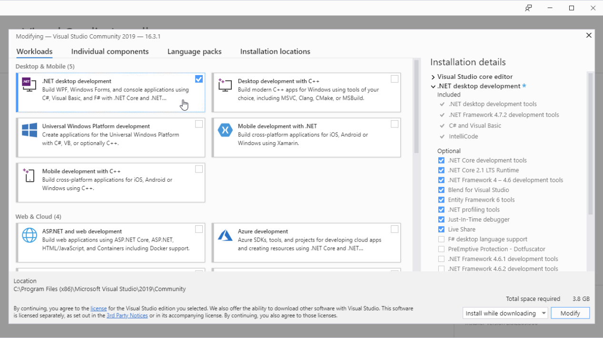
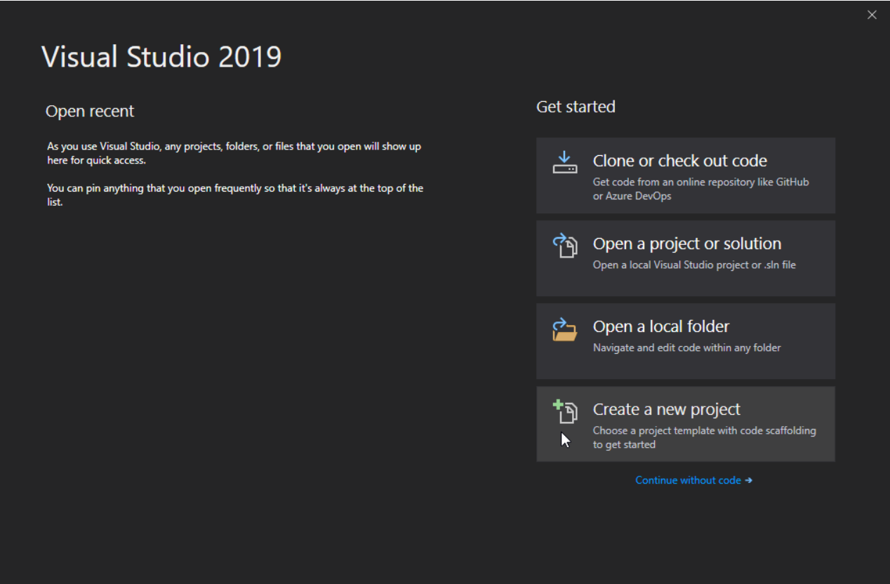
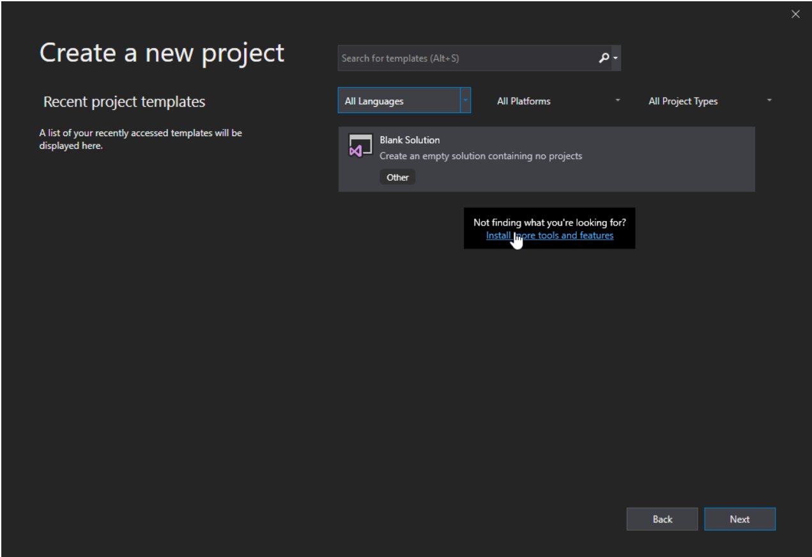
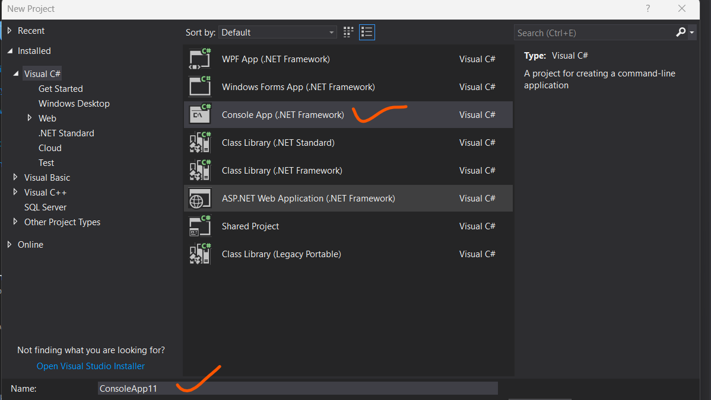

Get Started
The easiest way to get started with C#, is to use an IDE.
An IDE (Integrated Development Environment) is used to edit and compile code.
In our tutorial, we will use Visual Studio Community, which is free to download from
https://visualstudio.microsoft.com/vs/community/.
Applications written in C# use the .NET Framework, so it makes sense to use Visual Studio, as the program, the
framework, and the language, are all created by Microsoft.
Install
Once the Visual Studio Installer is downloaded and installed, choose the .NET workload and click on the Modify/Install button:

After the installation is complete, click on the Launch button to get started with Visual Studio.
On the start window, choose Create a new project:

Then click on the "Install more tools and features" button:

Choose "Console App (.NET Framework)" from the list and enter project name:

Visual Studio will automatically generate some code for your project: